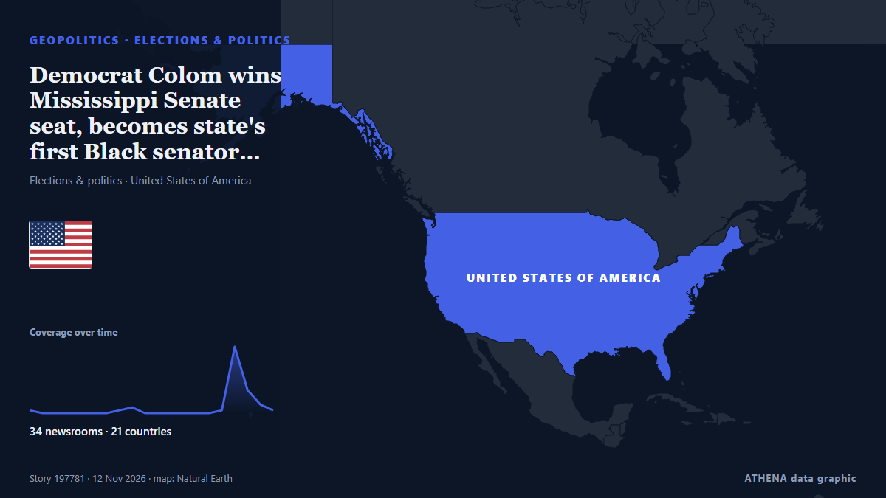

Democrat Colom wins Mississippi Senate seat, becomes state's first Black senator since 1874

He became the first Democrat to win a Mississippi Senate seat since John Stennis in 1982. από The Straits Times
Αναφέρθηκε ανεξάρτητα από 37 μέσα σε 23 χώρες από τις 9 Νοε, πρώτο το Forbes Business· η κάλυψη κορυφώνεται. Το ATHENA εκτιμά τον κίνδυνο αυξημένο (4.5/10), κυρίως λόγω της σοβαρότητάς του και της εμβέλειάς του. Βεβαιότητα 91% (υψηλή): το επιβεβαιώνουν 37 ανεξάρτητα μέσα, μέση αξιοπιστία 75%. Μέσα ανά χώρα: Ηνωμένες Πολιτείες (11), Σιγκαπούρη (4), Τουρκία (2). Κάλυψη: 9 Νοε έως 12 Νοε, 56 ώρες.
Γιατί έχει σημασία: Οι εξελίξεις στην ασφάλεια και τη διπλωματία μπορούν να μετατοπίσουν συμμαχίες, εμπόριο και αγορές πολύ πέρα από τις χώρες που εμπλέκονται.
Τι άλλαξε: 39 νέες αναφορές από 35 μέσα στο 24ωρο έως 12 Νοε.
Πρώτη διατύπωση: Urgent: CNN projects Democrat to win Mississippi Senate race
Οι τίτλοι των ειδήσεων παρουσιάζονται στα αγγλικά, όπως δημοσιεύτηκαν.
Πώς να διαβάσετε αυτή τη σελίδα
- Τι διαβάζετε
- 37 μέσα σε 23 χώρες ανέφεραν αυτό το γεγονός. Οι αναφορές παρακάτω εμφανίζονται με τη σειρά που δημοσιεύτηκαν· κάθε τίτλος ανοίγει το αρχικό άρθρο. Το ATHENA δεν γράφει δικά του ρεπορτάζ.
- Η εκτίμησή μας
- Για την καταγραφή — Οι αναφορές περιγράφουν ένα ολοκληρωμένο, εσωτερικό, εμπορικό ή προσωπικό ζήτημα. Το καταγράφουμε ώστε να βλέπετε ποιος το ανέφερε και πότε. Δεν παρακολουθούμε εδώ κίνδυνο ευρύτερης σύγκρουσης.
- Πόσα στοιχεία υπάρχουν
- Ισχυρή Πολλά ανεξάρτητα μέσα σε πολλές χώρες περιγράφουν το ίδιο γεγονός.
Αφού αφαιρεθούν οι επαναλήψεις, τα άσχετα και τα παλιά στοιχεία, υπολογίζονται 24 από τις 40 αναφορές που παρατίθενται· το 98% των τίτλων αντιστοιχεί στο γεγονός.
- Τι δεν σημαίνει
- Το ATHENA μετρά πώς καλύπτεται ένα γεγονός, όχι αν είναι αληθές. Δεν είναι πρόβλεψη, κρίση για το ποιος έχει δίκιο ή συμβουλή.
- Τι θα την άλλαζε
- Αναφορές από άλλα ανεξάρτητα μέσα που δείχνουν διαφορετική εξέλιξη, ή σαφής επιβεβαίωση ή διάψευση από επίσημη πηγή.
Εκτίμηση R2 · ανανεώνεται με κάθε ενημέρωση της σελίδας. Το ATHENA δεν έχει δημοσιεύσει ακόμη ιστορικό επιδόσεων για αυτές τις εκτιμήσεις· όταν το κάνει, θα συνδέεται εδώ.
Με μια ματιά
Επιλέγεται, βαθμολογείται και γράφεται από τη δημοσιευμένη μεθοδολογία του ATHENA. Κανένας συντάκτης δεν παρεμβαίνει σε μεμονωμένα γεγονότα. Πώς παράγεται ›
| 09 Nov 21:23 UTC | 1 |
|---|---|
| 10 Nov 00:23 UTC | 0 |
| 10 Nov 03:23 UTC | 0 |
| 10 Nov 06:23 UTC | 0 |
| 10 Nov 09:23 UTC | 0 |
| 10 Nov 12:23 UTC | 0 |
| 10 Nov 15:23 UTC | 0 |
| 10 Nov 18:23 UTC | 1 |
| 10 Nov 21:23 UTC | 2 |
| 11 Nov 00:23 UTC | 0 |
| 11 Nov 03:23 UTC | 0 |
| 11 Nov 06:23 UTC | 0 |
| 11 Nov 09:23 UTC | 0 |
| 11 Nov 12:23 UTC | 0 |
| 11 Nov 15:23 UTC | 0 |
| 11 Nov 18:23 UTC | 1 |
| 11 Nov 21:23 UTC | 23 |
| 12 Nov 00:23 UTC | 8 |
| 12 Nov 03:23 UTC | 6 |
| 12 Nov 06:23 UTC | 1 |
| 11 Nov 22:50 UTC | 0.0 |
|---|---|
| 11 Nov 23:30 UTC | 2.4 |
| 11 Nov 23:46 UTC | 1.5 |
| 12 Nov 01:17 UTC | 3.7 |
| 12 Nov 02:48 UTC | 4.0 |
| 12 Nov 06:25 UTC | 4.5 |
Γιατί αυτοί οι αριθμοί
Σημασία
Κίνδυνος
Βεβαιότητα
Η κάλυψη — ποιος το ανέφερε και πότε
ο τίτλος όπως δημοσιεύτηκε · ανοίγει το πρωτότυπο- Forbes Business · Ηνωμένες ΠολιτείεςNAACP President Lays Out Major Concerns As Deadline Nears For Mississippi Senate Race Certification
- PBS NewsHour · Ηνωμένες ΠολιτείεςHere are some of the House seats that Democrats didn't expect to win — but did
- PBS NewsHour · Ηνωμένες ΠολιτείεςMississippi voters reflect on surprising Senate race as count continues
- Mississippi Today · Ηνωμένες ΠολιτείεςVoters struggle as ballot deadlines pass in Mississippi Senate race
- Nile Post · ΟυγκάνταDemocrat Scott Colom seals historic win in Mississippi Senate race
- Deadline · Ηνωμένες ΠολιτείεςScott Colom Projected To Win U.S. Senate Race In Mississippi
- Anadolu Agency (English) · ΤουρκίαScott Colom wins Mississippi Senate race, giving state its 1st Democratic senator in nearly 4 decades
- Xinhua (English) — page reader · ΚίναUrgent: CNN projects Democrat to win Mississippi Senate race
- Mississippi Today · Ηνωμένες ΠολιτείεςColom wins: Mississippi picks another senator
- Politico · Ηνωμένες ΠολιτείεςMississippi elects Democrat Scott Colom to Senate in massive upset
- PBS NewsHour · Ηνωμένες ΠολιτείεςScott Colom wins Senate election in Mississippi
- The Independent · Ηνωμένο ΒασίλειοMississippi elects its first Black senator in 150 years giving Democrats a 55-seat majority
- The Canadian Press (via CityNews) · ΚαναδάςMississippi elects Democrat Scott Colom as state’s first Black US senator since Reconstruction
- Al Jazeera English · ΚατάρDemocrat Scott Colom wins closely watched US Senate race in Mississippi
- CBC News · ΚαναδάςMississippi's Scott Colom secures Senate seat in another midterm win for Democrats
- Le Monde (English) · ΓαλλίαDemocrat Scott Colom flips Mississippi Senate seat, becomes state's first Black senator since Reconstruction
- BBC News · Ηνωμένο ΒασίλειοDemocrat Scott Colom seals historic win in Mississippi Senate race
- Times of India · ΙνδίαDemocrat Scott Colom becomes Mississippi's first Black senator since 1874
- Mississippi Today · Ηνωμένες ΠολιτείεςWhy AP called Mississippi’s US Senate race for Scott Colom
- DW English · ΓερμανίαMississippi Senate race: Democrat Scott Colom defeats Republican Cindy Hyde-Smith
- NPR · Ηνωμένες ΠολιτείεςDemocrat Scott Colom wins the closest Senate race in the country
- The National · Ηνωμένα Αραβικά ΕμιράταDemocrat Scott Colom wins tight US Senate race in Mississippi
- RNZ National · Νέα ΖηλανδίαMississippi electing Scott Colom as senator may be one of the biggest shocks of 2026
- France 24 English · ΓαλλίαDemocrat Scott Colom wins historic Senate race in Mississippi
- The Straits Times · ΣιγκαπούρηDemocrat Colom wins Mississippi Senate seat, becomes state’s first Black senator since 1874
- TRT World · ΤουρκίαMississippi elects first Black US senator in over 140 years as Democrat flips seat
- CNA (Channel NewsAsia) · ΣιγκαπούρηDemocrat Colom wins Mississippi Senate seat, becomes state's first Black senator since 1874
- The Straits Times · ΣιγκαπούρηDemocrat Colom wins Mississippi Senate seat, becomes state's first Black senator since 1874
- RTÉ News · ΙρλανδίαDemocrat seals historic win in Mississippi Senate race
- Free Malaysia Today · ΜαλαισίαMississippi Democrat flips US Senate seat in stunning upset
- The New Arab · INTMississippi's Scott Colom flips US Senate seat to Democrat
- BusinessWorld · ΦιλιππίνεςDemocrat Colom wins Mississippi Senate seat, becomes state’s first Black senator since 1874
- New Straits Times · ΜαλαισίαMississippi Democrat flips US Senate seat in stunning upset
- The Business Standard (Bangladesh) (working feed) · ΜπανγκλαντέςDemocrat Colom wins Mississippi Senate seat, becomes state's first Black senator since 1874
- The Korea Times · Νότια ΚορέαMississippi elects Democrat Scott Colom as state's first Black US senator since Reconstruction
- Arab News · Σαουδική ΑραβίαDemocrat Colom wins Mississippi Senate seat, becomes state’s first Black senator since 1874
- The Straits Times · ΣιγκαπούρηDemocrat Colom wins Mississippi Senate seat, becomes state's first Black senator since 1874
- People Daily · ΚένυαDemocrat Scott Colom seals historic win in Mississippi Senate race
- NDTV · ΙνδίαScott Colom Wins Mississippi, Becomes State's 1st Black Senator Since 1874
- Mississippi Today · Ηνωμένες ΠολιτείεςDemocrat Scott Colom celebrates Senate victory: ‘In Mississippi, our prayers often change the course of history’